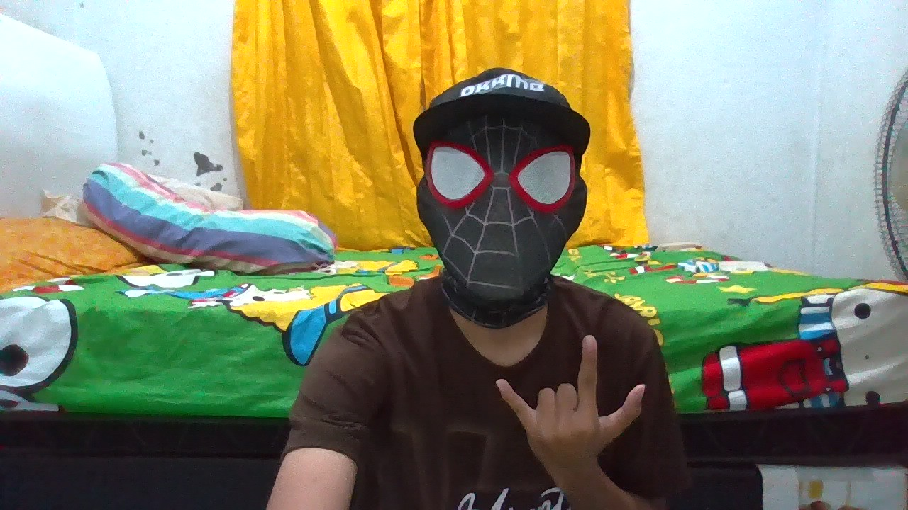

HALAMAN UTAMA
Halo, Saya Muhammad Sandi
Website portofolio pribadi dibuat dengan HTML dan CSS.

TENTANG SAYA
Tentang Saya
Perkenalkan nama saya Muhammad Sandi. Saya bercita-cita menjadi orang sukses melebihi Elon Musk. Saya anak kedua dari 2 bersaudara. Hobi saya bermain game, membuat kodingan, dan mengoleksi mobil diecast hotwheels. Saya seorang introvert yang tidak terlalu banyak bicara, namun sangat suka mencoba hal-hal baru.
KEMAMPUAN
Kemampuan Saya
C++
HTML
CSS
JavaScript Dasar
SOSIAL MEDIA